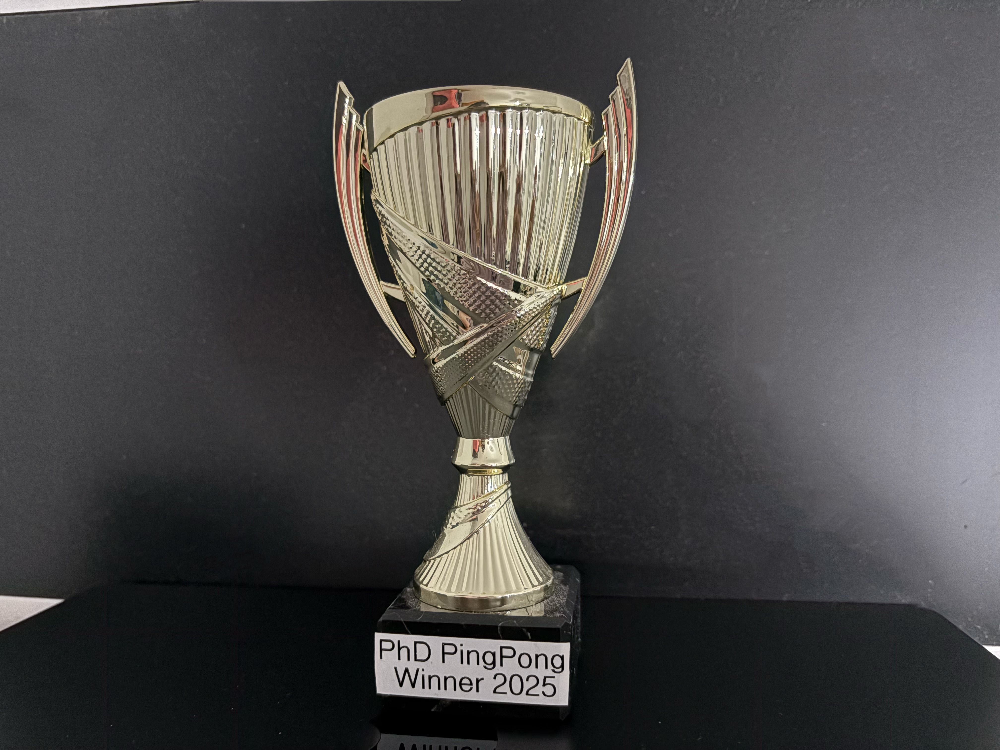
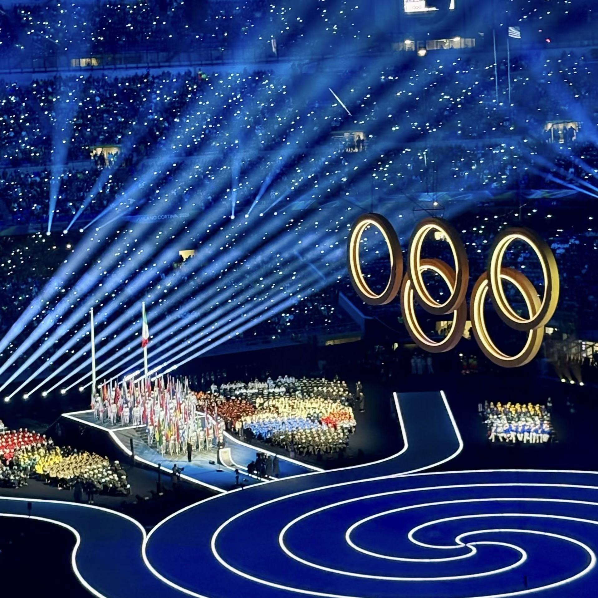
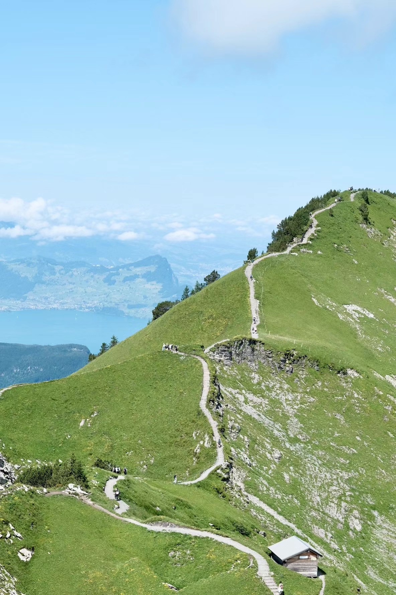

Publications
Collaborative Learning for Semi-Supervised LiDAR Semantic Segmentation
B. Yang, A. Condurache
International Conference on Machine Learning (ICML 2026)
Towards Foundation Models for 3D Scene Understanding: Instance-Aware Self-Supervised Learning for Point Clouds
B. Yang, M. Abdelsamad, et al.
IEEE/CVF Conference on Computer Vision and Pattern Recognition (CVPR 2026)
DOS: Distilling Observable Softmaps of Zipfian Prototypes for Self-Supervised Point Representation
M. Abdelsamad, M. Ulrich, B. Yang, et al.
AAAI Conference on Artificial Intelligence (AAAI 2026)
FLARES: Fast and Accurate LiDAR Multi-Range Semantic Segmentation
B. Yang, A. Condurache
IEEE/CVF Winter Conference on Applications of Computer Vision (WACV 2026)
TULIP: Transformer for Upsampling of LiDAR Point Clouds
B. Yang, P. Pfreundschuh, et al.
IEEE/CVF Conference on Computer Vision and Pattern Recognition (CVPR 2024)
CV
Education
2023 – present
Ph.D. in Computer Vision & Autonomous Driving — Bosch Research for AI × University of Lübeck
Advised by Dr. Alexandru Paul Condurache
2021 – 2023
M.Sc. in Robotics, Systems and Control — ETH Zurich GPA: 5.67 / 6.0
2016 – 2020
B.Sc. in Mechanical Engineering — RWTH Aachen University Dean's List (Top 5%)
Industry Experience
Dec 2023 – now
Industrial Ph.D. Research Scientist — Bosch Research
3D scene understanding for autonomous driving; first-author & core contributor at CVPR (2024, 2026), ICML 2026, AAAI 2026, WACV 2026.
Winter 2021
Research Engineer Intern — Volkswagen AG
AR-based data augmentation for semantic segmentation; +5% mIoU improvement.
Summer 2021
Software Engineering Intern — BMW AG
Large-scale driving data analysis via AWS/PySpark; Monte Carlo risk models for autonomous driving safety.
2019 – 2020
Research Intern & Bachelor Thesis — Schaeffler AG
Heat pump optimization for electric mobility; Patent No. DE102022100491A1.
Research Experience
Summer 2023
Master Thesis — ETH Zurich, Autonomous Systems Lab
Swin-Transformer LiDAR upsampling → CVPR 2024. GPA: 6.0/6.0.
Winter 2022
Research Project Assistant — ETH Zurich, AIT Lab
Camera localization for 3D gaze estimation.
Honours & Awards
2025
Outstanding Reviewer Award — CVPR 2025
2026
Silver Reviewer Award — ICML 2026
2020
Schaeffler Top Student Award; Dean's List every semester at RWTH Aachen (top 5%)
2016–2018
Scholarship recipient — Bildungsfonds, Carl-Arthur Pastor Stiftung, Hans Hermann Voss-Stiftung
Skills
Programming: Python, C++, CUDA, Bash ·
Deep Learning: PyTorch, PyTorch Lightning, TensorFlow, HuggingFace, W&B ·
3D / CV: Open3D, PCL, MinkowskiEngine, MMDetection3D, OpenCV ·
Infra: Linux, Docker, ROS, GPU clusters, Azure, AWS
Service
Teaching Assistant — Perception for Autonomous Vehicles, University of Lübeck (since 2024)
Reviewer — CVPR, NeurIPS, ICML, ICLR, ICCV, ECCV (2024–2026)
Life
Since May 2026, I volunteer at Nikolauspflege in Stuttgart on weekends, accompanying children with visual impairments and helping with their daily activities. The experience has taught me a lot about how blind people organize their everyday lives.
Sport
I enjoy pretty much every sport — basketball, table tennis, football, badminton, you name it. I also love watching sport games and competitions, from local matches to major tournaments.

1st place at the Bosch internal PhD table tennis competition.

Paris 2024 Summer Olympics — watched several games and soaked up the atmosphere.

Milano Cortina 2026 Winter Olympics opening ceremony.
Photography
I love capturing the places I travel through — landscapes, fleeting moments, and beautiful scenes from around the world. Hiking trips are a favourite excuse to bring the camera out (while my wife documents everything as a vlogger). Travelling and collecting these glimpses of the world is something I genuinely treasure.
Eibsee, Bavaria — the glacier lake at the foot of Zugspitze.
Mount Fuji, Japan — caught on a clear morning from the hiking trail.

Stoos, Switzerland — alpine views from one of my favourite hikes near Schwyz.